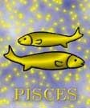

<html>
<head>
<title>Halak</title>
<script type="text/javascript" src="js/public.js"></script>
<script type="text/javascript" src="js/subpage.js"></script>
<script language="JavaScript1.1">
IMG_PICT="images/inte/horo/" 
horopict = ""
var subpage = new Array(
horopict+"Kicsit lassú, kicsit bizonytalan, de azért eszes, szellemes. Társaságban, nyilvánosan a szebbik arcát mutatja, kedvességével, közvetlenségével mindig sikert arat. Közelebbrõl megismerve rájövünk, hogy csak szerepet játszott, és nem szabad komolyan venni. A kényelemszeretet irányítja, ami a nyugalom iránti vágyából ered. Nem hajszolja magát feleslegesen. Nem tudja kifejezni mély és õszinte érzelmeit, pedig tele van ilyenekkel. Kettõs arculat van, az egyik a mártíré, az örök áldozaté, a másik a megvalósíthatatlan álmokat kergetõ fantasztáé. Önállóságról is álmodozik, de képtelen meglenni biztos támasz, védelmezõ nélkül. Könnyen az ital, vagy a drog után nyúl, így menekülve el a világ elõl. De nagyon segítõkész, \"jó szomszéd\", aki bármikor segít. Nagyon családcentrikus. A szerelemben nem túl szenvedélyes, inkább nagyon szeszélyes. A plátói szerelmet sokszor többre becsüli, mint a testi szerelmet. Mindig gyöngéd és kedves. Féltékenysége is elviselhetõ, nem csinál nagy jelenetet, inkább szomorú. Víz-jegy, negatív töltés, változó minõség. Szimbóluma: Hagyományosan két ellentétes irányba úszó hallal szokták ábrázolni, melyeket egy fonal mégis összeköt. Ezek a Halak kettõs természetét képviselik, a fizikai látható lényét és a rejtett valóságot, ami a testi érzékelhetõség mögött létezik. Mindkettõnek van saját célja, melyet el akar érni, de ez a két cél irányában különbözõ. ",
horopict+"A Halak szülött úgy érzi, mintha két különbözõ irányba löknék egyszerre, s ez a belsõ késztetés különösképpen tudatalatti lényében van így. Erre a kettõs lökésre kétféle módon reagál. Gyakran, ha szembe kell nézni a veszéllyel a hal elrejtõzik. Ez a kettõs erõ határozatlanságot, bizonytalanságot eredményez. A Halak szülött jól játssza szerepeit és sokszor más színben tünteti fel magát, mint amilyen a valóságban. Uralkodó bolygója a Jupiter és a Neptun. Az asztrológusok hajlamosak úgy gondolni, hogy a Neptun, mint új elv, fõleg a Halakkal van kapcsolatban. Ennek az új planétának a felfedezése egy idõben történt az emberiség új fejlõdésével, a tudatfeletti megismerésével, s mintha az értelem fejlõdését az intuitív képességek szélesebb körû használata fokozná. A Jupiteri uralom szétterjedést, jovialitást, emberszeretet, segíteni akarást jelez. A Neptun az álmodozás, az érzékfeletti dolgok érlelõje, ami idealizmust és érzelmi töltést hoz a Halak természetébe. A szétterjedés észrevehetõ a kötetlenségben, a határok be nem tartásának igényében. A Neptun ködössége nyilvánul meg abban, hogy a Halak-ember nem szívesen néz szembe a realitásokkal, inkább álmodozó, az ideált, az ideálist keresi, melyet a magasrendû típus meg is talál egy magasabb szférában. A Halak változó minõségû, negatív töltésû, víz-jegy. A változó minoség jelenti a körülményekhez való alkalmazkodást. ",
horopict+"A víz jelleg és stabilitáshiány keveredése a legfogékonyabbá teszi az összes jegyek közül. A befolyásolhatóság abban nyilvánul meg, hogy általában az erõsebb áramlatnak enged. A negatívitás visszahúzódottságot, zárkózottságot ad, ami rejtettséghez és mélységhez vezet, amit nehéz felfogni. Ügyeiben igényli a támogatást, a \"medret\", mely a \"víz\"-nek partot ad. A víz erõs érzelmi beállítottságára utal. A Halak-típusúak közül kerülnek ki a legkifinomultabb lelki életet élõ emberek. Ennek egyúttal következménye, hogy érzelmi benyomásokra erõsen reagál, s intuíciója fejlett. Alapvetõen emocionális, ösztönösen beleérzõ, megérzõ és szétáradó. Hangulata a lelkesültség és a depresszió végletei között ingadozik, A vízhez hasonlóan mindent visszatükröz és úgy alakul, ahogyan a víz felveszi a tartály alakját. Ez abban vehetõ észre, ahogy másoktól függ, ahogy mások támogatására szorul. A jegy legjobb képviselõinek képessége egy olyan nagymértékû fogékonyság, mely racionális ésszel nem magyarázható forrásokból merít. Bár ennek a képességének csak akkor veheti hasznát, ha elõbb szellemét, értelmét eléggé képezte. Lelkében határtalan emberszeretet él, melynek gyökere az a felismerés, hogy egyek vagyunk, testvérek vagyunk mindnyájan. Nem kérdez, nem gondolkodik, nem nézi, hogy a segítség helyénvaló-e. Vakon hozza áldozatát. Ezért sokan kihasználják jóindulatát. ",
horopict+"A megfoghatatlanhoz, érzékfelettihez való vonzalma kapcsolatba hozza a Halak-szülöttet mindennel, ami misztikus, ami szép, ami nem e világról való. Ezekre a dolgokra mondanak a gyakorlatibb emberek -akiknek talán még nem sikerült felfedezniük a látszat mögött a lényeget,- hogy \"ködös álmok\", \"légvárak\", \"ábrándok\". A fejlett Halak embert a sok baj azonban nem töri le, belenyugvási képessége igen magas. Túlfinomult lelkületének szüksége van arra, hogy megszépíthesse az élet hazugságait, a valóság piszkait és aljasságait. A mindennapit is költészetté emeli. A gyakorlati életbe nehezen tud beilleszkedni és ennek következtében gyakran telve van ki nem mondott panasszal. Némasága miatt nemigen lehet tudni, mit gondol, mit akar. Jellemét nehéz kiismerni, hiszen sokszor önmagával sincs tisztában. Ezért sokszor õ lesz a meg nem értett, vagy félreértett ember. Fõként innen származik ösztönösen visszavonultsági kényszere. A Halak emberének vérmérséklete szangvinikus, mélabús aláfestéssel. Akarata érzésszerû, változó és szeszélyes. Annyira befolyásolható, hogy õ a született \"jó ember\", aki ha rossz társaságba keveredik, önkéntelenül sodródik a bûnbe. Felfogóképessége jó, amit egyszer megtanult, nehezen felejti el. Kettõs természetének megfelelõen sokoldalú és sorsában is megmutatkozik ez. Nyugodt, barátságos modorával, szeretetre méltó egyéniségével tiszteletet és tekintélyt tud szerezni. ",
horopict+"Ragaszkodó és megbocsátó. Jó barátságra is törekszik. Kedves, figyelmes. Romantikus beállítottságú, szeret álmodozni, ábrándozni. A házasság pénzügyi vonatkozásait illetõen nem nagyon gyakorlatias. Egy erõsebb partnert igényel. A Halak no házias és kitûnõ családanya. Szem elõtt tartja a közös boldogságot, a család jövõjét. Ha szerelmi csalódás éri, válságba jut és látványosan szenved. Szexualitásában is kettõsséget mutat: idealisztikus, de emellett érzékisége is fejlett. Szexuális élete szorosan összefügg azzal a személlyel, akit szeret. Erõs vágy él benne a gyermek iránt. Akkor van igazán elemében, amikor ösztöneit követi és kapcsolatban marad a saját tudatalatti énjével és ebbõl a tudatalatti, széles nagy birodalomból nyeri inspirációit. Könnyen tud kapcsolatot teremteni más emberek tudatalatti \"én\"-jével. A túlzásba vitt segítségadásban kifárad, s ilyenkor mártírnak érzi magát, s ez panaszáradatban, sírásban, sértõdöttségben nyilvánulhat meg. Rajongó lelke ítélõképességét elhomályosíthatja. A rengeteg belsõ ellentmondás, túlérzékenység, idegi megterheléshez, lelki betegséghez vezethet. A kényelemszeretet túlzásba vitele tékozlóvá, lustává nemtörõdömmé tehet. Az elfajzott típus médiumi képességeit csalásra használhatja. A vágy, hogy felülemelkedjék az anyagi világ nyûgébõl, nem eredményezhet mást, mint menekülést a kötelezettségektõl, a felelõsségvállalásoktól. ",
horopict+"Köd homályosíthatja el látását és ilyenkor gondolkodása, viselkedése zavarossá, bizonytalanná válhat. Természetes hajlamainak korlátozását okozza, ha anyagias szemléletre, vagy túlságosan a szabályoknak alávetett életmódra kényszerítik. Ennek eredménye aggodalmaskodás, vagy alkalmatlanságérzet lehet. ",
horopict+"<b>Bolygója:</b> a Jupiter és Neptun<br>"
+"<b>Eleme:</b> a víz<br>"
+"<b>Természete:</b> mozgékony<br>"
+"<b>Erényei:</b> kedves, gyengéd, romantikus, alkalmazkodó<br>"
+"<b>Hibái:</b> szeszélyes, túlérzékeny, hiszékeny, álmodozó, nem igazán kitartó. <br>"
+"<b>Testrésze:</b> a láb<br>"
+"<b>Betegségre való hajlam:</b> érzékenyek a meghûlésre, érzékeny a lábfejük, a bokájuk, az alkoholt õk bírják a legkevésbé<br>"
+"<b>Védõkövek:</b> ametiszt, krizolit<br>"
+"<b>Szerencsekövek:</b> ametiszt, turmalin, Márciusi: heliotrop"
);
</script>
</head>
<BODY background="images/public/background/bg1.jpg">
<script language="JavaScript1.1">
	firstdraw("HALAK február 20. - március 20.");
</script>
</body>
</html>